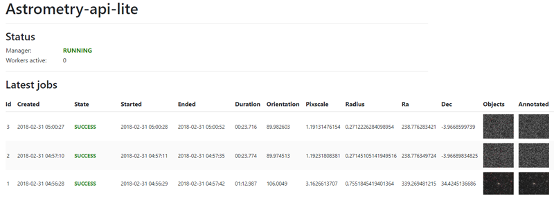
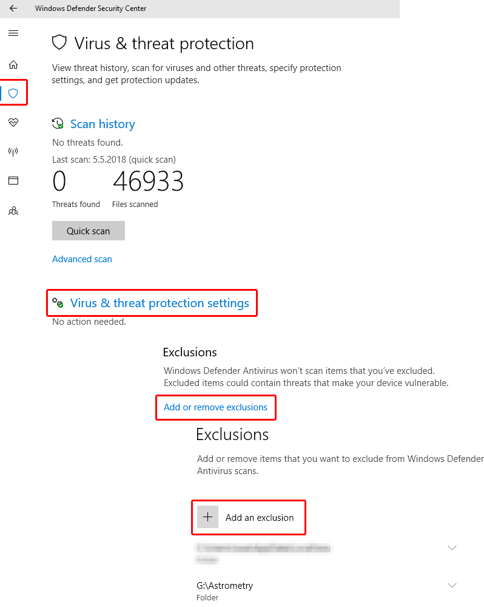

Astrometry-api-lite is a NodeJS application bundle that runs an astrometry.net equivalent API on your machine. Since astrometry.net packages require Linux to run the base requirement for running this software is Linux in one form or another.
A pure Linux installation (or a VM) is a good choice but all the required software also runs on Windows 10 Subsystem for Linux which means a "pure Linux" is not a necessity, and you can run this API directly from your desktop as you have probably already figured out.
The software package consists of three runnables: the API, the Worker Manager and the Workers. The API is the HTTP interface that applications use, the Worker Manager is responsible for spawning workers when there are solver jobs to complete and the Worker runs the solver and saves the results.
Where ever you would normally enter http://nova.astrometry.net , you can now enter the address of your locally running API (by default http://localhost:3000 ). The API behaves like Nova's API would.
There are a few things to note about the software running under the Linux Subsystem:
Exit properly with CTRL+C. And now for the explanation:
You'll have no problems, as long as the only bash window open is the Astrometry-api-lite window. However if you have
multiple bash windows open, there's a snag: when you close the window, the NodeJS processes will still be left running
(no clue why - only the node processes do this) so while you have closed the window, the API and the Manager are still
running. However if you close the window by pressing
CTRL+C the processes will be killed properly. The desktop shortcut also includes a small kill script that prevents
you from accidentally running multiple instances simultaneously.
So as a summary, exit with CTRL+C. However if you're not running any other bash windows, you can simply close the
window normally.
The Windows Installer is a tool that you can use with Windows 10 Subsystem for Linux and it sets up everything for you, guided by a familiar user interface. The installer itself is very lean and does not contain anything else than the wizard user interface and the install script itself - everything else gets downloaded from the internet. You'll end up with a single desktop shortcut that starts both the API and the Worker Manager.
The installer can be run multiple times if something fails during the installation of if you need to reconfigure the API. Astrometry.net indexes will be downloaded using resume mechanics, so if a download fails or times out, progress should not be lost. Note that there is no uninstaller available. The installer does not write anything to registry, it only creates the target directory and runs the installation scripts there. So in order to really uninstall it, just delete the files - however this will leave the prerequisites (astrometry.net and nodejs mainly) installed inside the Linux Subsystem, if you wish to remove those you'll need to remove the packages using the bash console with a few apt commands.
If you chose to download astrometry.net indexes, they will be stored in your <installation directory>/indexes.
A few configuration values can be set for each application.
| Key | Value |
|---|---|
| database | the path to the SQLite database file where the queue and results are stored |
| queueFileUploadDir | the path where uploaded files are stored |
| apiPort | which port the API http server uses. Note: do not use port 80 (requires root permissions) |
| enableSwagger | enables or disables the swagger UI, accessible at /swagger |
| enableDashboard | enables or disables the dashboard at /dashboard |
| enableJobCancellationApi | enables or disables the job cancellation api, /api/job-control/cancel/{id}. When disabled the control API just returns 403 |
| enableConfigEditApi | enables or disables the config edit api, /api/config. When disabled the config edit API just returns 403 |
| Key | Value |
|---|---|
| database | the path to the SQLite database file where the queue and results are stored |
| worker | the path to the worker application |
| maxConcurrentWorkers | how many concurrent workers are allowed to be spawned |
| Key | Value |
|---|---|
| database | the path to the SQLite database file where the queue and results are stored |
| queueFileUploadDir | the path where uploaded files are stored |
| tempDir | the path where (temporary) result files produced by the solver are stored |
| cleanTempUponCompletion | clean up temp files after solver finishes (default: true) |
| computationTimeLimit | the time limit for the solver, jobs that last longer will be aborted |
| skipJobsOlderThanSeconds | the worker will abandon jobs that are older than this value in seconds (useful if the API has piled up jobs but the manager has been down, you don't want to start solving old jobs) |
| storeObjsImages | true or false, whether or not you want to store the resulting object images for each job. Stores them in the job database in base64 format. |
| storeNgcImages | true or false, whether or not you want to store the resulting NGC (annotation) images for each job. Stores them in the job database in base64 format. |
| imageScale | Image scaling to apply to the saved images (if you want to save space) |
| sigma | Sigma value that the solver uses (noise reduction). By default 0, which disables the use of the parameter. Higher value removes more noise. Higher values result in less found sources, which is likely to speed up the solving process. Use it if you feel you need more performance out of the solver. Experiment what value works for your setup. |
| depth | Depth value that the solver uses (limits the number of field objects used for solving). By default 0, which disables the use of the parameter. Lower number means less field objects are used for solving, resulting in faster solve times. However if the limit is too low, it may well result in failed solves. Use it if you feel you need more performance out of the solver. Experiment what value works for your setup. |
The Dashboard, available at http://localhost:3000/dashboard by default is a simple dashboard that displays the latest jobs, their statuses and the status of your Worker Manager and how many Workers are currently running. The dashboard automatically refreshes the data every 5 seconds.
In 1.2.0, limited configuration editing feature was introduced, enabling you to easily edit values that you most likely may want to frequently modify.
If you have configured the Workers to store object/annotation images from the results, you can click on the thumbnails from each job to view them.
Additionally, if you've configured the API with enableJobCancellationApi: true you are also able to cancel running jobs from the dashboard - useful since solver tasks can take a lot of time to finish, and you don't want to wait for a botched job.
You may notice that the solver isn't as fast as you had hoped; there are a few factors that affect it.
Installing the software to SSD including the astrometry.net indexes will most likely greatly speed up the solving process. Since the solver accesses a lot of large files, this is pretty much a no-brainer, the faster it can read them the better.
Secondly, Windows Defender real-time protection can be rather aggressive and does extends its operation to the Linux Subsystem. In some cases a speedup of maybe up to 10x can be achieved when the index directory, Linux Subsystem directory and the astrometry-api-lite installation directory are added to the Defender exclusion list.

First of all, important note: do not try to run multiple parallel instances of the API or the Worker Manager! If
you're using the Windows 10 shortcut, then you have no need to worry - the startup includes a kill script that will
only allow running a single instance of each process.
Running multiple instances may lead to job database corruption and the maxConcurrentWorkers setting loses all meaning
as each manager only tracks its own child processes.
Secondly, as mentioned in the Windows 10 primer, if you terminate the bash window, but you have other bash windows still open, the processes will not terminate! This is important to note! Only when the last bash window is closed, all the Linux subsystem processes will die. So if you have a bash window open when you close the Astrometry-api-lite window, the processes will continue to run.
Q: I'm getting an SQLITE error claiming my database is corrupted, what to do?
A: This may happen when multiple processes mess with the database without cleanly completing transactions. If the
database doesn't seem to recover, stop the processes (In Win10 close the bash window, open a new bash from start menu,
and run
killall -9 node just to be sure), copy a clean database to replace it from
src/common/workdb-template.db and start the programs again.
Alternatively, once you're sure the process is dead, open a bash shell to the installation directory and run:
This will in fact do the same thing as copying the workdb-template.db manually.npm run reset-db
This software is open source, and can be downloaded in its entirety from Github: https://github.com/Jusas/astrometry-api-lite
In fact, the Windows installer downloads the whole source package and runs the TypeScript compiler to compile the runnables - so you already have the source on your machine. The compiled runnables are located in the dist/ directory, while most of the sources are in the src/ directory.
Thank you for choosing an open source product! :-)
Jussi Saarivirta
jusasi@gmail.com